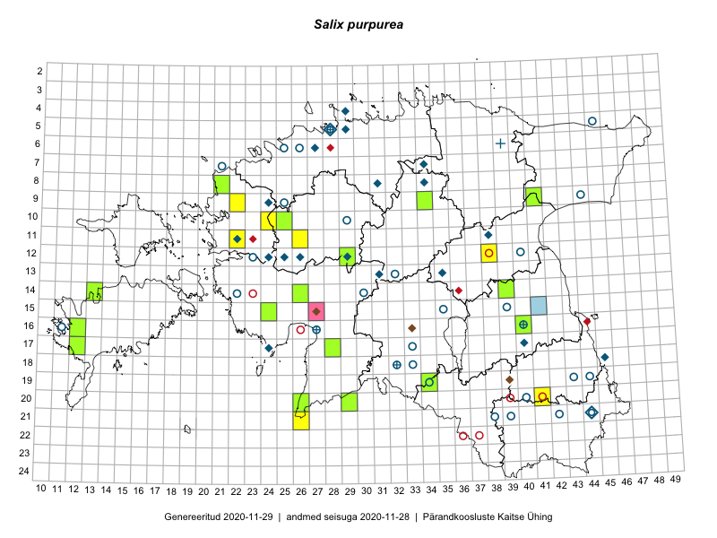

Salix purpurea
Uuendatud: 2016-12-01
Kaardile koondatud taksonid: Salix purpurea L.; Salix purpurea subsp. purpurea L.

Kaart põhineb 12 kirjel, neist vaatlusi 11 ja eksemplare 1.
Viited andmebaasikirjetele
- Tiit Hallikma, Indrek Tammekänd, Toomas Kukk: 2015-06-09: 12-29: ala
- Tiit Hallikma, Indrek Tammekänd, Toomas Kukk: 2015-06-09: 12-29: GPS punkt
- Mari Reitalu, Oliver Parrest: 2015-05-22: 18-12: ala
- Ulvi Selgis: 2015-08-21: 12-38: ala
- Hanna-Eliisa Luts, Tõnu Ploompuu, Anna-Grete Rebane: 2015-07-19: 10-24: ala
- Hanna-Eliisa Luts, Tõnu Ploompuu: 2015-07-28: 11-26: ala
- Tõnu Ploompuu: 2015-08-21: 11-22: ala
- Sirje Lagle, Tõnu Ploompuu: 2015-05-15: 09-22: ala
- Silvia Pihu, Illi Tarmu: 2015-07-11: 19-34: GPS punkt
- Silvia Pihu, Illi Tarmu: 2015-07-11: 19-34: GPS punkt
- Sirje Azarov, Indrek Tammekänd: 2016-07-18: 21-26: ala
- Peedu Saar: 2015-10-06: 10-25: GPS punkt